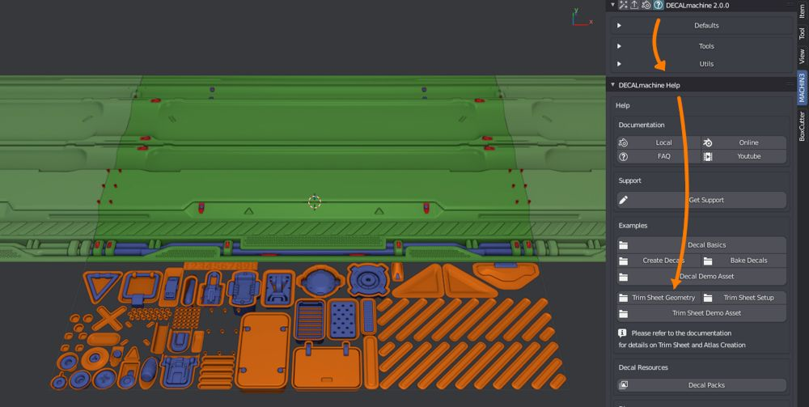

Trim Sheets
Trim Sheets are textures combining a number of separate details into a single sheet.
This is different from Decals (in DECALmachine), where each one has a unique set of textures.
Note
A Trim Sheet in DECALmachine is defined by a set of textures, a data.json file containing meta data as well any number of Trim Decal folders.
Check out the Export Introduction for an overview of Decals, Atlases and Trim Sheets and how it all ties together.
DECALmachine 2.0 supplies a single Example Trim Sheet to get you started.
Trim UV tools
Once a Trim Sheet is set up and added as Trim Sheet Library, Trim UV tools like Unwrap Trim and Trim Cut can be used with that sheet.
Trim Sheet Creation
The Trim Sheet creation tools are found in the Decal, Atlas & Trim Sheet Creation panel.
Creating a Trim Sheet in context of DECALmachine means, taking existing Trim Sheet textures and setting them up so DECALmachine and its Trim tools can use them.
It does not mean modeling the sheet geometry or baking it!
Keep in mind
However, if you are unclear about modeling or baking a trim sheet, you can check out the supplied Trim Sheet Geometry Example and study it.

Alex Senechal's Advanced Tiling Techniques and Shawnell Priester's Trim Sheet Tutorial
Trim Sheet from Atlas
Trim Sheets and Atlases share a common data format, that describes the exact positions of each Decal/Trim in the Atlas/Sheet among other things.
This enables you to turn an Atlas into a Trim Sheet: